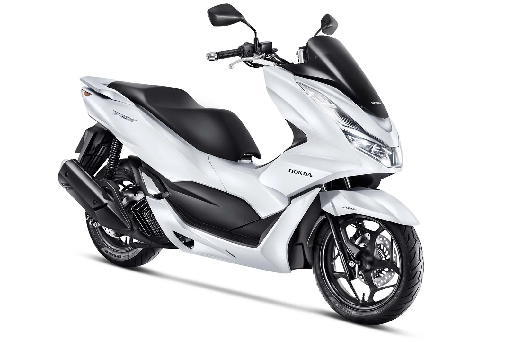

Honda PCX 160 Vale a Pena em 2026?

Introdução à Honda PCX 160
A Honda PCX 160 é uma scooter premium que se destaca no Brasil por sua tecnologia e conforto. Em 2026, com atualizações como sistema Idling Stop (desliga o motor em paradas) e freios ABS, muitos questionam: Honda PCX 160 vale a pena? Sim, para uso urbano diário, ela oferece equilíbrio entre economia, praticidade e estilo. Lançada como evolução da PCX 150, compete com Yamaha NMax 160 e Suzuki Burgman 125, destacando-se pela transmissão CVT automática e motor eSP+ de 156,9 cc.
Entrega 13 cv de potência e torque de 1,47 kgfm, ideal para tráfego cidade, com partida elétrica e tanque de 8 litros.
Preço da Honda PCX 160 em 2026
O preço sugerido da Honda PCX 160 ABS 2026 é R$ 17.500 (sem frete), variando para R$ 18.000 com impostos em diferentes regiões. A versão DLX custa R$ 18.500 com extras como smart key. Comparada a usadas (R$ 13.000-15.000), a nova vale pela garantia de 3 anos e features como painel digital. Para quem busca scooter premium, Honda PCX 160 vale a pena 2026 pelo custo-benefício, com depreciação baixa (~10% anual) graças à revenda forte.
Inclui rodas de 14", porta-objetos sob o banco e peso de 128 kg, facilitando estacionamento em espaços urbanos.
Consumo e Desempenho no Uso Diário
O consumo médio é de 40-45 km/l na cidade, alcançando 50 km/l com Idling Stop ativado, graças ao motor flex e eficiência. Isso faz Honda PCX 160 vale a pena para economia, com autonomia de ~350 km. Velocidade máxima ~105 km/h, com aceleração suave para semáforos. A suspensão (telescópica dianteira e dupla traseira) absorve buracos, enquanto o freio ABS dianteiro garante segurança. Para garupa, o banco largo e estribos retráteis adicionam conforto em trajetos médios.
Em uso urbano, ela é versátil para commuting ou lazer, com smart key eliminando chaves tradicionais.
Manutenção e Custos Anuais da PCX 160
A manutenção é moderada: revisões a cada 4.000 km custam R$ 200-350 em autorizadas. Custos anuais (peças, óleo, pneus) ficam entre R$ 800-1.200 para 10.000 km. Peças como filtro de ar (R$ 40) e pastilhas (R$ 120) são acessíveis, com rede ampla da Honda. Sem falhas comuns, a durabilidade chega a 80.000 km. Para usuários diários, Honda PCX 160 vale a pena 2026 pelo custo, incluindo seguro ~R$ 500/ano.
- Prós: Economia, tecnologia (Idling Stop, ABS), conforto, praticidade.
- Contras: Preço inicial alto para cc, suspensão macia em curvas, sem USB de série.
Comparação com Concorrentes em 2026
Vs. Yamaha NMax 160 (R$ 17.000): A PCX vence em consumo e smart key. Vs. Suzuki Burgman 125 (R$ 15.000): A Honda é mais potente e tecnológica. Para mobilidade urbana, a PCX se destaca pela eficiência. Teste uma para sentir o motor SOHC de 4 válvulas.
Conclusão: Honda PCX 160 Vale a Pena?
Sim, a Honda PCX 160 vale a pena em 2026 para uso prático, com ótima economia, tecnologia e conforto. Ideal para cidades com tráfego, onde sua agilidade conta. Consulte concessionárias para promoções. (Baseado em análises 2026; valores aproximados.)
Outras Notícias
Vale a pena comprar a Biz 125?